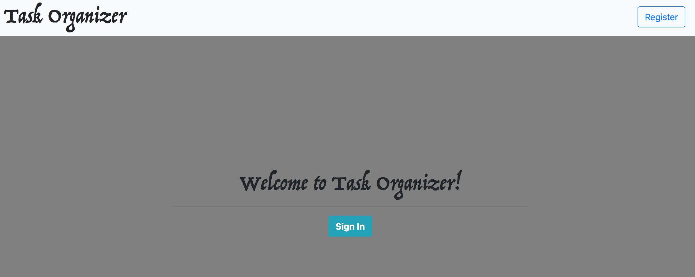

App tutorial¶
If you are a new user click on the register bottom on the upper right corner.
{kind=link}
Once clicked this sign in form should show up in your screen and complete it following the questions such as fist name, last name, user name, email, favorite color and password.

When you finish registering to the page. Click on the upper right corner where it says Go Home and sign in with your username and password.
If password is forgotten. That's no, just click on the upper right corner after trying to sign in where it says Forgot Password where a your user name and security question of your favorite color would be needed in order to reset it.
If you gracefully sign in then the following landing page would be display
Where this three features would be shown:
Add Task

Remove Task
View Task
On the Add Task a user can add a task with a description as following and then save it.
Once the task is saved user can view the task by going to the Home Page (Right upper corner) and clicking on view task where the recent added task is displayed.
Also, the organize function of our app let you organize your task alphabetically. For example:
To remove the task go to the Home Page (upper right corner) where the remove option is and type the task you want to remove as following and click remove.
Once its clicked the task will be removed.
Also, there is the option to remove all the task at once by clicking on the red bottom saying Yes to remove all the tasks.
Once you are done using the task organizer click on the right left bottom that says Log Out for your session to be terminated. You can logout and your task won't be remove.